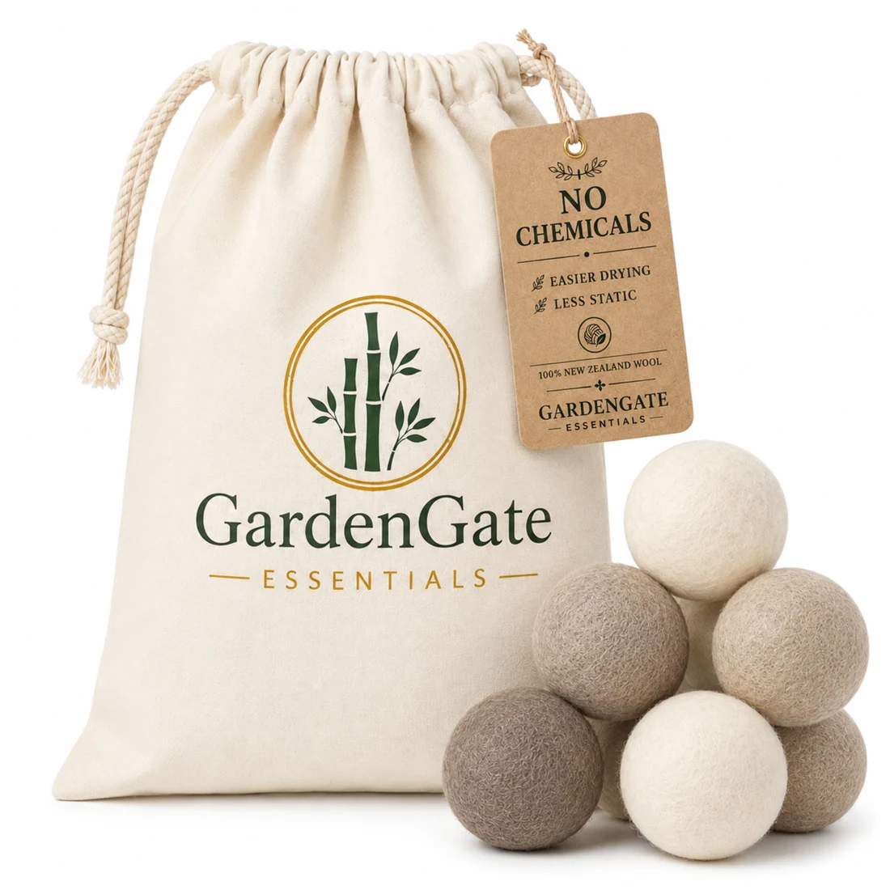
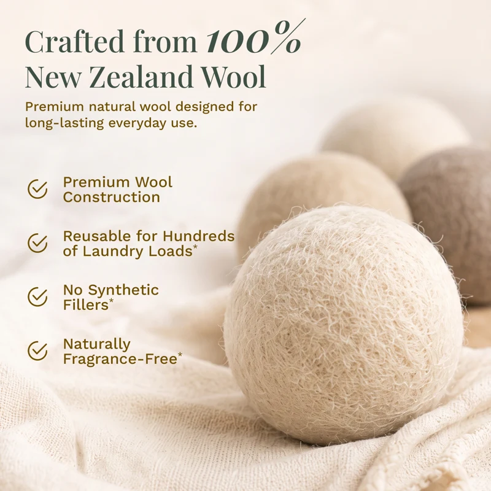
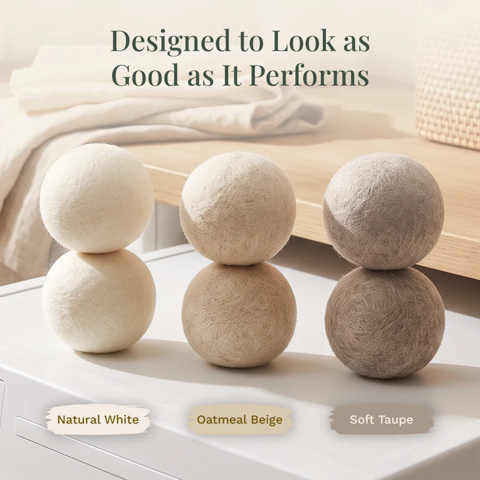
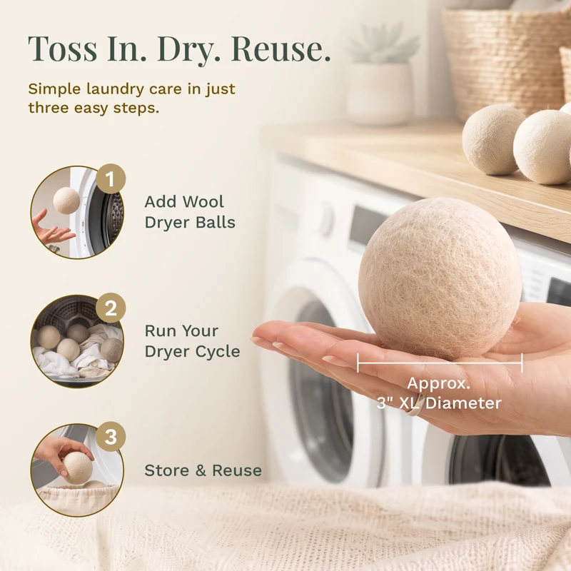
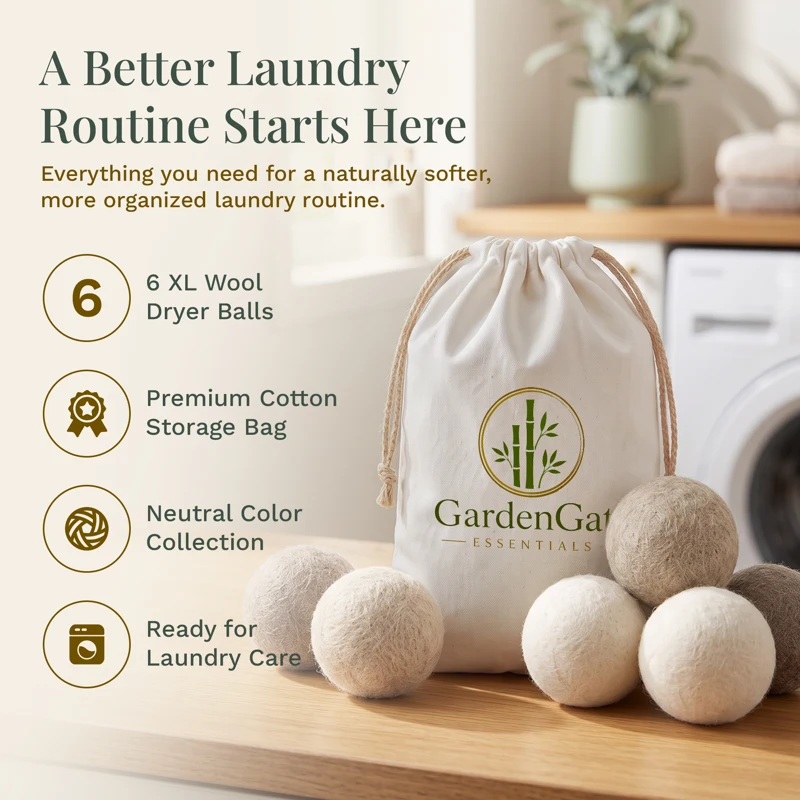

Natural order for everyday living
Live
Naturally
Natural materials. Lasting function. A little more calm.
Thoughtful essentials that bring everyday life beautifully into order.
01 Renewable materials02 Thoughtful design03 Everyday durability04 Naturally calming
Room by room.
Thoughtfully designed organization that works hard, looks beautiful, and makes daily routines feel lighter.
The everyday essential

Featured natural essential
A softer routine,
straight from nature.
Reusable wool dryer balls designed to soften fabrics, help separate laundry, and bring a simpler rhythm to every load.
- 01
100% premium wool
Made from renewable natural fibers
- 02
Reusable by design
A durable essential for everyday laundry
- 03
Beautifully contained
Includes a reusable cotton storage bag
Our approach
Honest materials.
Purposeful design.
We look beyond broad “eco-friendly” claims. Every essential begins with a real material, a considered process, and a clear purpose in your home.
Origin
We value the natural character of materials, from the warmth of bamboo to the softness of wool.
Process
Natural character stays visible through thoughtful craftsmanship and restrained processing.
Purpose
Every form is designed to make daily care, storage, and organization feel effortless.
Beautiful in the details.




A little more calm, every day
Ready to organize
beautifully?
Bring a softer, simpler rhythm home.
Discover our featured essential on Amazon.